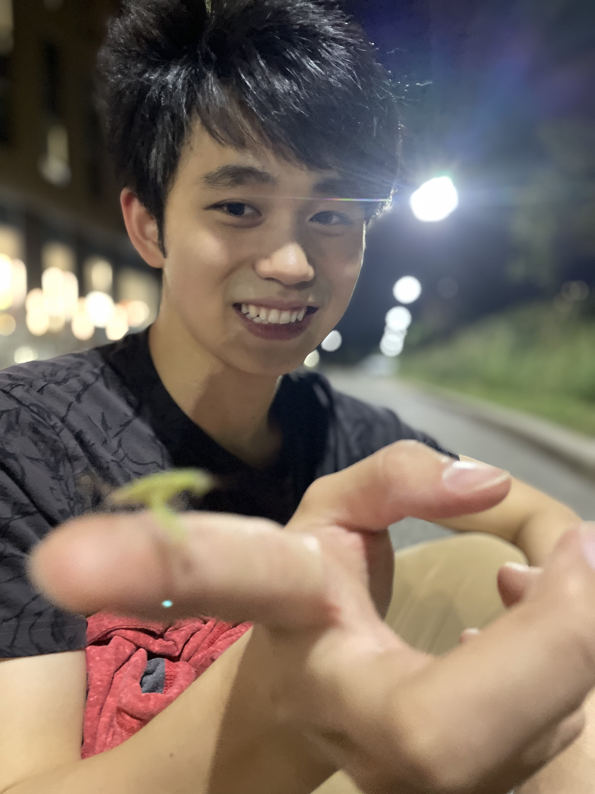
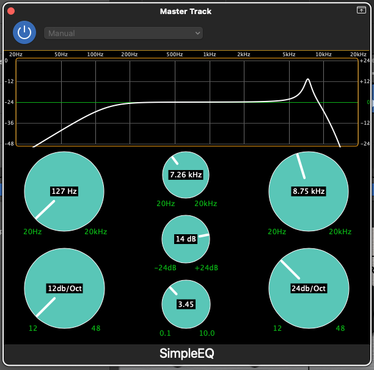
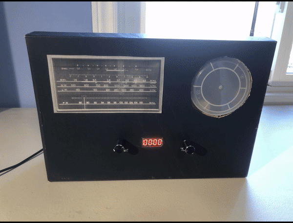

Hi, I'm Charlie.
Full-stack developer. I build React and .NET products, most recently at Virtek Vision and Geotab. I graduated from the University of Waterloo in April 2026 (BASc, Computer Engineering, Honours with Distinction). My capstone was TalusCore, an ankle-worn fitness tracker.
LatelyIn September 2026 I went to Taiwan with the University of Waterloo Dragon Boat Club for the Club Crew World Championships (CCWC).

01Work
Full Stack Developer · Virtek VisionSep–Dec 2025
- Migrated the web app for the flagship Iris product off a legacy mobile platform.
- Integrated it with a re-architected projection system, moving from microservices to a central orchestrator.
- Designed and built the hierarchical tree-view that makes features easier to find.
Software Developer · GeotabJan–Apr 2025
- Shipped features in MyGeotab, used by 4.7M+ vehicle subscriptions.
- Optimized fleet filtering so users can run complex queries over their assets.
- Refactored the platform-wide React header and toolbar components for consistency.
- Reworked password validation to make account creation more reliable.
Full Stack Developer · Develop For Good × Holland BloorviewOct 2024–Feb 2025
- Built a questionnaire platform so clinicians can assess how well a prosthetic works for a patient.
- Implemented secure clinician and patient authentication, role-based access and account management.
- Integrated Stripe payments into organization registration.
Web Developer · AGFJan–Apr 2024
- Built and maintained production site components serving 800,000+ clients.
- Implemented homepage login, and responsive React data tables for client information.
- Set up site-wide cookie management and tracking with Salesforce Pardot and Google Tag Manager.
Developer · National Research CouncilSep–Dec 2022
- Built CRM solutions for the IRAP, CanExport and SONAR360 programs, supporting 8,000+ SMEs.
- Delivered client-requested features and contributed to QA testing and documentation.
02Projects
TalusCore · capstoneteam of 4 · 2026
A screenless, ankle-worn fitness tracker for places where a wrist device isn't allowed, like sports, medical settings and workplaces with wristwear restrictions. An ESP32 reads motion, heart-rate/SpO₂ and barometric sensors and publishes over MQTT to a NestJS + PostgreSQL backend. A Python service adds peer comparisons and fitness insights with K-means clustering, and a React Native app shows live stats and history. We validated the system end to end and iterated through a few different designs.
SimpleEQ · audio pluginC++ / JUCE
A parametric equalizer that runs standalone or as a plugin in your DAW. Adjustable peak (quality, slope, frequency), low- and high-pass filters, and a live frequency-response curve.
▸ Screenshot

Secret Radio SafeC / STM32
A combination safe disguised as a radio, built for an escape room. I wrote the firmware for the I/O, displays, sound and motors, and designed and assembled the hardware and housing.
▸ Watch it work

LightcubeC / hardware
A 3D LED array I soldered and wired by hand, with animations programmed in C.
▸ Watch it work

03About
I like building software that is fun and impactful.
Outside of work I paddle (dragonboat) and play frisbee. I also longboard and go trail running whenever there's time.
I like to play music and snap photos, and I like the tools behind them (Logic, DaVinci Resolve, Darktable etc): projects I've produced and played in ↗ and recordings I played on ↗.